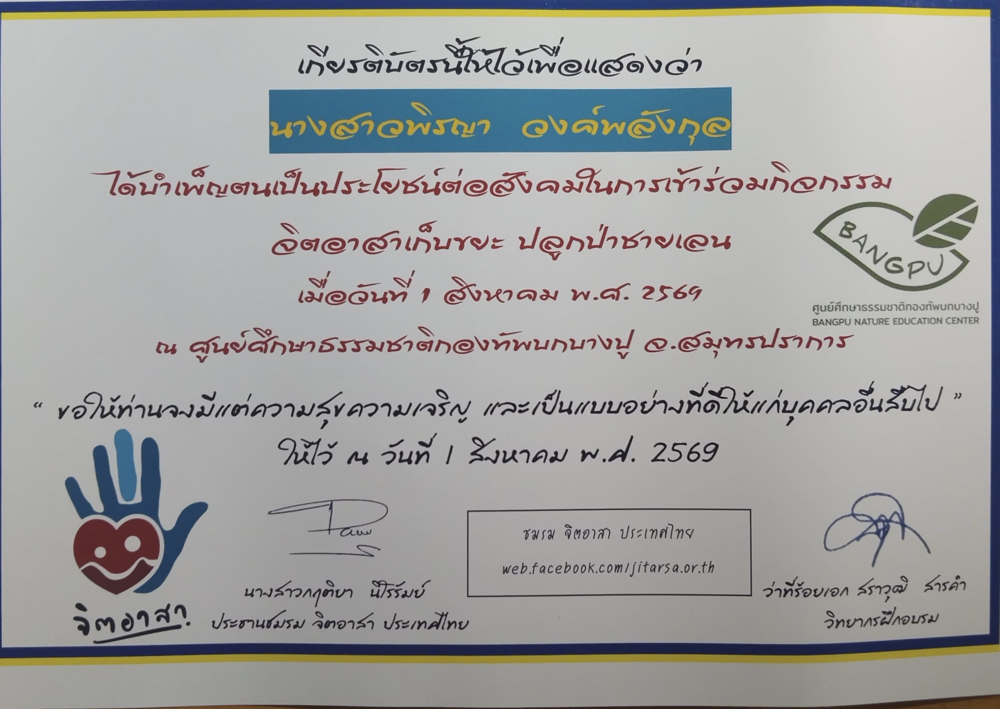

WELCOME TO MY PORTFOLIO
Piraya Wongpalangkul
คณะ บริหารธุรกิจ
สาขา การบัญชี
มหาวิทยาลัยเกษตรศาสตร์
แฟ้มสะสมผลงาน
WELCOME TO MY PORTFOLIO
แฟ้มสะสมผลงาน
ชื่อ-นามสกุล:นางสาวพิรญา วงค์พลังกุล
วันเกิด :16 ธันวาคม พ.ศ.2551
เป้าหมายในอนาคต : เป็นนักศึกษาที่มีคุณภาพ และเตรียมพร้อมกับอาชีพในอนาคต
ตั้งใจทำงานที่ได้รับมอบหมาย และสามารถจัดการเวลาได้อย่างเหมาะสม
พร้อมเรียนรู้สิ่งใหม่ ๆ และพัฒนาตนเองอยู่เสมอ
สามารถสื่อสารและทำงานเป็นทีมได้ดี
ชอบช่วยเหลือผู้อื่น และรับฟังความคิดเห็นของผู้อื่นเสมอ
โรงเรียนกระทุ่มแบน"วิเศษสมุทคุณ"
โรงเรียนกระทุ่มแบน"วิเศษสมุทคุณ"
แผนการเรียน ศิลป์-คำนวณ
จุดเริ่มต้นของความสนใจด้านการบัญชีเกิดจากการที่ดิฉันเติบโตมาในครอบครัวที่ประกอบธุรกิจส่วนตัว ทำให้มีโอกาสได้เห็นการบริหารจัดการธุรกิจในชีวิตประจำวัน และได้รับมอบหมายให้ช่วยงานด้านบัญชีเบื้องต้น เช่น การบันทึกรายรับรายจ่าย การตรวจสอบเอกสาร และการจัดเก็บข้อมูลทางการเงิน ประสบการณ์เหล่านี้ทำให้ดิฉันได้เรียนรู้ว่าการบัญชีไม่ได้เป็นเพียงการบันทึกตัวเลข แต่เป็นเครื่องมือสำคัญที่ช่วยสะท้อนผลการดำเนินงานของธุรกิจ สนับสนุนการวางแผน การตัดสินใจ และการพัฒนาองค์กรให้เติบโตอย่างมั่นคง เมื่อได้สัมผัสกับงานด้านบัญชีมากขึ้น ดิฉันยิ่งเห็นถึงความสำคัญของข้อมูลทางการเงินที่ถูกต้อง เป็นระบบ และตรวจสอบได้ จึงเกิดแรงบันดาลใจที่จะศึกษาด้านการบัญชีอย่างจริงจัง เพื่อพัฒนาความรู้และทักษะที่สามารถนำไปประยุกต์ใช้ในการบริหารธุรกิจและการประกอบวิชาชีพในอนาคต นอกจากประสบการณ์จากธุรกิจของครอบครัวแล้ว ดิฉันยังเป็นผู้ที่มีความละเอียดรอบคอบ มีความรับผิดชอบ ซื่อสัตย์ และใส่ใจในรายละเอียด สามารถทำงานที่ต้องใช้ความแม่นยำได้เป็นอย่างดี อีกทั้งยังพร้อมเรียนรู้สิ่งใหม่ ๆ และพัฒนาตนเองอยู่เสมอ ซึ่งเป็นคุณลักษณะที่สำคัญของผู้ประกอบวิชาชีพบัญชี ด้วยเหตุนี้ ดิฉันจึงมีความตั้งใจที่จะเข้าศึกษาในคณะบริหารธุรกิจ สาขาการบัญชี มหาวิทยาลัยเกษตรศาสตร์ เพราะเชื่อมั่นว่าหลักสูตรของมหาวิทยาลัยมุ่งพัฒนาความรู้ด้านบัญชีควบคู่กับความเข้าใจด้านการบัญชี การเงิน และการประยุกต์ใช้เทคโนโลยีในงานบัญชี ซึ่งจะช่วยเตรียมความพร้อมให้สามารถปฏิบัติงานได้อย่างมีประสิทธิภาพและตอบสนองต่อการเปลี่ยนแปลงของโลกธุรกิจในปัจจุบัน หากได้รับโอกาสเข้าศึกษา ดิฉันจะมุ่งมั่นพัฒนาตนเองทั้งด้านวิชาการและทักษะการทำงาน ยึดมั่นในความซื่อสัตย์ ความรับผิดชอบ และจรรยาบรรณของวิชาชีพบัญชี เพื่อนำความรู้และประสบการณ์ที่ได้รับไปสร้างประโยชน์ให้แก่องค์กร สังคม และต่อยอดธุรกิจของครอบครัวในอนาคต พร้อมก้าวสู่การเป็นนักบัญชีที่มีคุณภาพ มีความสามารถ และมีความรับผิดชอบต่อสังคม

เกียรติบัตรที่ 1

เกียรติบัตรที่ 2

เกียรติบัตรที่ 3

เกียรติบัตรที่ 4

เกียรติบัตรที่ 5
Email : pwongpalangkul@gmail.com
Phone : 082-204-6771
Facebook : PK Pirxya